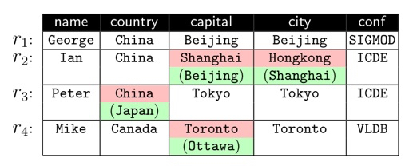

Outline
One notoriously hard data cleaning problem is, given a database, how to precisely capture which value is correct (i.e., proof positive) or wrong (i.e., proof negative). Although integrity constraints have been widely studied to capture data errors as violations, the accuracy of data cleaning using integrity constraints has long been controversial. Overall they deem one fundamental problem: Given a set of data values that together forms a violation, there is no evidence of which value is proof positive or negative. Hence, it is known that integrity constraints themselves cannot guide dependable data cleaning. In this project, we study rule-based data cleaning methods for trusted data cleaning.
Fixing Rules
We first discuss fixing rules, a special case of Sherlock rules.
Consider a database D of travel records for a research institute, specified by the schema: Travel (name, country, capital, city, conf), where a Travel tuple specifies a person, identified by name, who has traveled to conference (conf), held at the city of the country with capital. One Travel instance is shown in the figure below. All errors are highlighted and their correct values are given between brackets. For instance, r2[capital] = Shanghai is wrong, whose correct value is Beijing.
